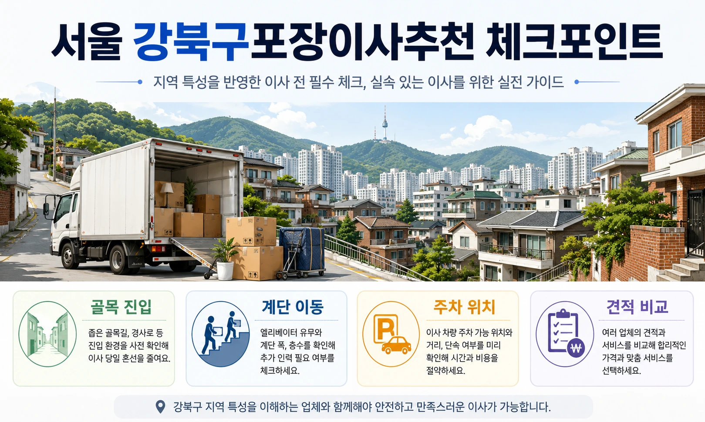
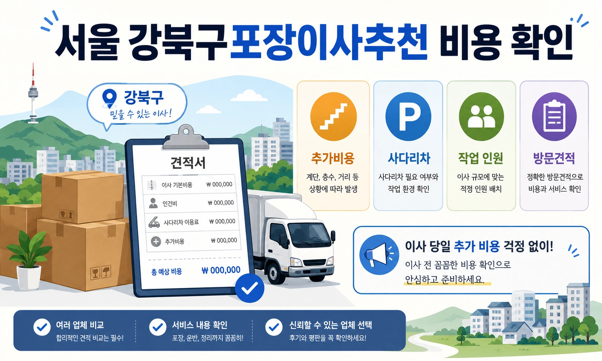

서울 강북구포장이사추천 골목길 견적 체크
강북구에서 포장이사를 준비한다면
건물 구조와 차량 접근성을
먼저 확인하는 것이 중요합니다.
미아동, 수유동, 번동, 우이동은
아파트도 있지만 빌라와 다세대주택,
언덕길 주거지가 함께 있는 지역입니다.

이런 환경에서는
단순 평수보다 실제 작업 동선이
견적에 더 큰 영향을 줄 수 있습니다.
비용과 견적이 달라지는 핵심 기준
강북구 포장이사 비용은
짐의 양, 작업 인원, 차량 크기 외에도
계단 이동 거리와 골목 진입 여부에 따라
차이가 생길 수 있습니다.
화물차가 건물 앞까지 들어가지 못하면
작업자가 짐을 옮기는 거리가 길어지고
그만큼 시간과 인력이 추가될 수 있습니다.
상담을 받을 때는
집 앞 도로 폭,
주차 가능 위치,
계단 유무,
엘리베이터 크기,
대형가구 이동 가능 여부를
가능한 자세히 알려주는 것이 좋습니다.
사진으로 현장 조건을 전달하면
업체가 필요한 장비와 인력을
더 정확히 판단할 수 있습니다.

강북구 포장이사 업체추천을 볼 때는
무조건 큰 업체만 찾기보다
빌라와 골목 작업 경험이 있는지
확인하는 것이 필요합니다.
업체 비교 전 확인해야 할 사항
대형 아파트 이사와
좁은 골목의 다세대주택 이사는
작업 방식이 다릅니다.
짐을 옮기는 거리,
포장재 이동 방식,
가구 보호 방법이 달라질 수 있기 때문입니다.
비용을 비교할 때는
사다리차 사용 여부도 중요합니다.
건물 앞에 사다리차를 세울 공간이 없다면
계단 운반이나 엘리베이터 운반으로
진행해야 할 수 있습니다.
이 경우 시간과 인력 기준이 달라지므로
처음 견적 단계에서 확인해야 합니다.
강북구 포장이사 잘하는곳을 찾으려면
가격보다 작업 조건 설명이
구체적인 업체를 우선 보는 것이 좋습니다.
추가비용을 줄이는 준비 방법
견적서에 차량 대수,
작업 인원,
포장 범위,
추가비 조건,
파손 보상 기준이 명확히 들어가야 합니다.
단순히 저렴한곳이라는 이유만으로
선택하면 당일 현장에서
예상하지 못한 비용이 생길 수 있습니다.
짐을 줄이는 것도 중요한 절약 방법입니다.
강북구처럼 골목이나 계단 이동이 많은 곳은
작업량이 비용에 직접 반영되기 때문에
불필요한 물건을 미리 정리하는 것이 좋습니다.
버릴 가구,
폐기할 가전,
사용하지 않는 책과 생활용품을
이사 전 정리하면
차량 크기와 작업 시간을 줄일 수 있습니다.
포장이사 비교견적은
같은 조건을 기준으로 받아야 합니다.
계약 전 마지막 체크포인트
한 업체에는 계단 이동을 말하고,
다른 업체에는 말하지 않으면
견적 비교 자체가 정확하지 않습니다.
상담 전에는 현재 집과 도착지의
층수, 엘리베이터, 주차,
사다리차 가능 여부를
한 번에 정리해두는 것이 좋습니다.
강북구 포장이사는
지역 특성상 작업 동선이 중요합니다.
도로가 좁거나 언덕이 있는 경우,
작업 시간이 길어질 수 있으므로
일정에도 여유를 두는 것이 좋습니다.
오전 작업인지 오후 작업인지,
비가 오는 날에는 포장재를 어떻게 쓰는지,
바닥 보양은 어디까지 하는지도
확인하면 좋습니다.
결국 강북구 포장이사는
비용만 비교하는 일이 아닙니다.
현장 조건을 정확히 설명하고,
작업 방식과 추가비 기준을 확인해야
불필요한 문제를 줄일 수 있습니다.
골목길, 계단, 주차, 사다리차,
작업 인원까지 함께 비교하면
더 안정적인 포장이사 준비가 가능합니다.
강북구 포장이사에서
특히 중요한 부분은 작업 동선입니다.
건물 앞까지 차량이 들어갈 수 있는지,
짐을 실을 위치가 평지인지,
계단이 좁거나 꺾인 구조인지에 따라
업체가 준비해야 할 방식이 달라집니다.
수유동이나 미아동 일부 주거지는
도로 폭이 좁거나 경사가 있는 곳이 있어
일반적인 아파트 이사와 다르게
작업 시간이 길어질 수 있습니다.
강북구 포장이사 비용을 줄이고 싶다면
소형 짐이라도 포장 범위를 정확히 정해야 합니다.
원룸이나 투룸 이사라고 해서
무조건 비용이 낮게 나오는 것은 아닙니다.
책이 많거나,
소형 가전이 여러 개 있거나,
분해가 필요한 침대와 책상이 있으면
작업 시간이 늘어날 수 있습니다.
업체를 고를 때는
골목길 작업 경험이 있는지 확인하는 것도 좋습니다.
차량을 멀리 세워야 하는 상황에서는
작업자의 숙련도와 포장 방식이 중요합니다.
무거운 가구를 옮길 때
벽이나 계단 난간에 흠집이 생기지 않도록
보양을 어떻게 하는지 물어보는 것이 좋습니다.
계약 전에는 작업 시작 시간과
예상 종료 시간도 확인해야 합니다.
골목 작업은 예상보다 오래 걸릴 수 있어
도착지 엘리베이터 예약 시간이 촉박하면
문제가 생길 수 있습니다.
강북구 포장이사에서 동선 확인이 중요한 이유
강북구는 빌라, 다세대주택, 언덕길 주거지가 많아
이사 차량이 건물 앞까지 접근하지 못하는 경우가 있습니다.
이때는 차량에서 현관까지의 이동 거리가 길어지고
무거운 가구를 옮기는 과정도 더 복잡해질 수 있습니다.
특히 계단 폭이 좁거나 중간에 꺾이는 구조라면
냉장고, 세탁기, 침대 프레임 같은 물건은
분해나 별도 운반 방식이 필요할 수 있습니다.
견적 전 계단과 현관 사진을 전달하면
업체가 필요한 장비와 인원을 더 정확히 판단할 수 있습니다.
이 점이 강북구 포장이사 비용 차이를 줄이는 핵심입니다.
자주 묻는 질문
A. 계단, 골목 폭, 주차 가능 위치, 대형가구 이동 가능 여부를 확인해야 합니다.
A. 계단 운반이나 인력 추가가 필요하면 비용이 달라질 수 있습니다.
A. 짐이 적으면 가능하지만 골목이나 계단 조건이 복잡하면